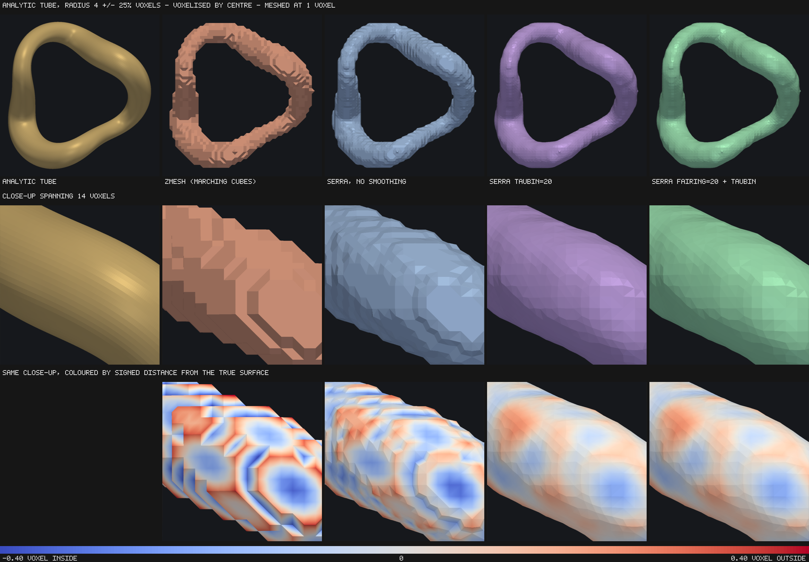
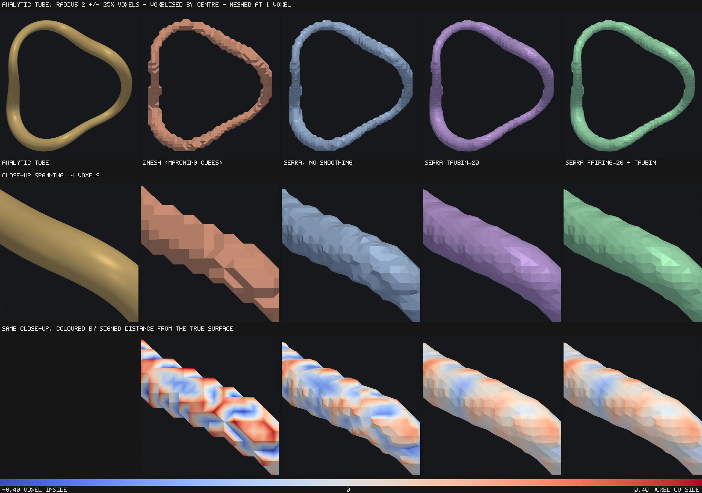
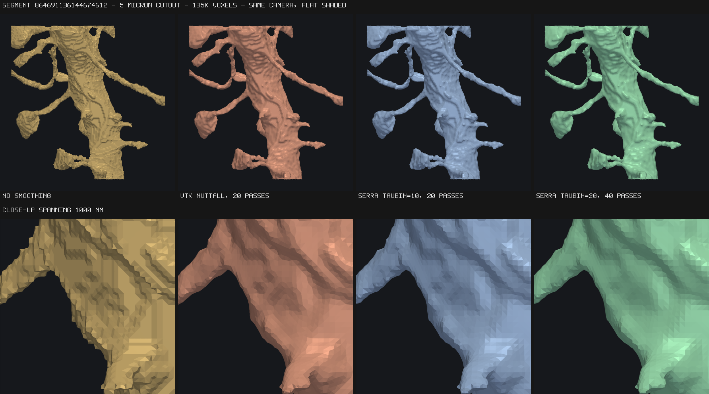

Accuracy and smoothing
Every figure here is checked by the test suite, and the tolerances there are set from these measurements rather than from round numbers.
Analytic shapes
Measured against exact volume and area, isotropic voxels, no relaxation:
| shape | volume | area | mean normal error |
|---|---|---|---|
| sphere, r = 8…32 | < 0.11% | +2.8…3.0% | 8.1° |
| ellipsoid 30/20/12 | +0.17% | +3.3% | 8.6° |
| cylinder, any axis | −1.48% | −0.47% | |
| torus R25 r8 | +0.24% | +2.9% | |
| ellipsoid on 4×4×40 nm voxels | −0.21% |
Every one comes out closed, 2-manifold and correctly oriented, with the right Euler characteristic — including χ = 0 for the torus, so genus survives meshing.
Two systematic biases
Area is overstated by about 3% on smooth surfaces and does not shrink with resolution. Placing a cell's vertex at the centroid of its edge crossings leaves the surface slightly faceted. Marching cubes has the same non-convergence at roughly +9%.
Sharp convex edges are bevelled. An n³ box loses exactly 3n − 2 of volume:
an edge effect, so the relative error falls as 1/n². Marching cubes has the
opposite bias — exact on axis-aligned boxes, 9% over on spheres. For the rounded
shapes serra targets this does not bite; a sphere lands within 0.06%.
Relaxation
relaxation=k runs k iterations of constrained smoothing. On a sphere of
radius 20:
| k | volume | area | mean normal | 95th pct | triangle-area CV |
|---|---|---|---|---|---|
| 0 | −0.11% | +2.95% | 8.1° | 17.5° | 0.247 |
| 3 | −0.52% | +0.24% | 4.0° | 9.3° | 0.224 |
| 5 | −0.78% | −0.25% | 2.9° | 6.8° | 0.220 |
| 10 | −1.43% | −0.87% | 1.8° | 4.2° | 0.216 |
| 25 | −3.39% | −2.24% | 1.0° | 2.0° | 0.212 |
Normal accuracy converges with iterations, which it does not under local
placement alone. k = 3 is a good default when you want it: area error drops
by an order of magnitude for a modest cost.
Bounding the deviation
Laplacian smoothing shrinks volume. max_deviation (in voxels, default 0.5)
caps how far any vertex may move from where the data put it, enforced per axis
against the original position rather than per step. Tightening it monotonically
reduces shrinkage:
| max_deviation | volume error at k = 25 |
|---|---|
| 0.1 | −1.09% |
| 0.25 | −2.99% |
| 0.5 | −6.42% |
Relaxation preserves topology: genus survives, and one-voxel-thick sheets do not collapse.
Objects that touch each other
Relaxation currently runs per object. Two objects sharing a wall hold
separate copies of it and smooth against different neighbourhoods near the
wall's rim, so the wall may no longer be exactly coincident from both sides.
Each object stays individually watertight and manifold. At relaxation=0
shared walls are exactly coincident, which the test suite checks.
Validation against zmesh on real data
bench/validate_winding.py performs the check described in CLAUDE.md: classify
sample points as inside or outside each mesh with a robust generalized winding
number, confirm the volumes agree, and confirm that where the two disagree the
points lie close to the surface. That last part is what distinguishes a
genuine difference in where the surface was placed from an actual defect — a
hole or an inverted patch produces disagreements scattered through the volume.
The fixture is data/microns_neuropil.npy.gz: a 512³ cutout at 32×32×40 nm from
gs://iarpa_microns/minnie/minnie65/seg_m1300, taken from dense neuropil near
the centre of the imaged column. It holds 20,840 objects with a median size of
56 voxels, and no single object exceeds 4.1% of the volume — deliberately not a
cell body, since serra is built for volumes with very many small objects.
Over 24 objects spanning the size range, 20,000 sample points each:
| value | |
|---|---|
| serra volume / true voxel volume | 0.982 (0.918–1.005) |
| zmesh volume / true voxel volume | 0.968 (0.918–0.991) |
| serra / zmesh volume | 1.015 (1.000–1.031) |
| winding-number agreement | 94.7% of sampled points |
| disagreeing points, distance to surface | median 0.47 voxels, worst 2.11 |
| all sampled points, distance to surface | median 4.98 voxels |
Two things to read from this.
serra is closer to the voxel truth than zmesh — 0.982 against 0.968 — and both undershoot, which is expected: a surface drawn through the voxel boundary cuts the corners off a blocky object.
Every disagreement is a boundary effect. Disagreeing points sit 11× closer to the surface than a typical sampled point, and none is further than 2.11 voxels from it. The two meshers place the surface slightly differently within about a voxel, and agree everywhere else. Nothing is scattered through the interior, which is what a hole or an inverted normal would produce.
The raw agreement rate of 94.7% is not a defect either: most of these objects are tiny, so uniform sampling in their bounding box puts a large share of points within a voxel of the surface. Agreement is 99%+ on the larger objects and falls on the smallest purely through the surface-to-volume ratio.
Reproducing
uv sync --group bench
python bench/download_microns.py # re-fetch the cutout
python bench/download_microns.py --survey # re-run the region search
python bench/validate_winding.py
Judged against an analytic solid
The comparisons above measure a mesh against the voxels it was built from, and
the section below measures it against a finer grid. Both references are
quantised, so both confound "the mesh is wrong" with "the reference is blocky".
bench/analytic_tube.py removes the reference grid entirely.
A tube is defined by a smooth closed space curve C(t) and a radius R(t), and a point is inside when its distance to the curve is less than the radius there — answerable exactly at any floating-point coordinate. The voxelisation, a voxel labelled by whether its centre is inside, is then the only quantised object in the experiment. The curve winds around the z axis while oscillating along it, so the surface presents every orientation to the grid rather than favouring the axis planes the way a sphere or a cylinder does.

Two things are measured. Surface accuracy: sample points on the mesh, area-weighted, and evaluate the analytic signed distance at each — a perfect mesh scores zero, the mean absolute value is how far the surface sits from the truth, and the mean signed value says whether it sits systematically inside or outside. Classification: sample the box, ask the solid and the mesh independently, count disagreements.
This is the most favourable setting for smoothing that exists. The true surface really is smooth, so everything separating it from the voxelisation is quantisation noise and there is no real detail to destroy.
| radius 4 voxels | faces | mean |error| | bias | volume | IoU |
|---|---|---|---|---|---|
| zmesh (marching cubes) | 13,504 | 0.141 vx | −0.021 | −1.18% | 93.48% |
| serra, no smoothing | 13,504 | 0.109 vx | −0.043 | −2.15% | 94.99% |
taubin=10 |
13,504 | 0.078 vx | −0.026 | −1.25% | 96.39% |
taubin=20 |
13,504 | 0.068 vx | −0.009 | −0.40% | 96.85% |
fairing=10 + taubin |
13,504 | 0.078 vx | −0.026 | −1.26% | 96.39% |
fairing=20 + taubin |
13,504 | 0.068 vx | −0.010 | −0.42% | 96.85% |
fairing=40 + taubin |
13,504 | 0.063 vx | +0.021 | +1.08% | 96.98% |
Smoothing recovers the surface downsampling hid. Mean error falls 38% and the bias converges on zero — at 20 sweeps the surface is unbiased to within a hundredth of a voxel and the enclosed volume is within half a percent of analytic.
The cell domain and the label domain agree to three decimal places, which is the point of running it here. An analytic tube is a single object, and on a single object the two are the same graph, so anything other than agreement would mean the cell-domain implementation was wrong. What it buys — adjacent objects that cannot drift apart — a one-object fixture structurally cannot show; that is measured on real neuropil below.
Plain Laplacian smoothing is not in this table
Neither relaxation=k nor fairing=k without Taubin steps appears here,
because neither is worth recommending: both shrink. At 20 sweeps on this
tube they lose 12% and 15% of the volume respectively, and 41% at radius 2.
They are the same operator in two different domains. The numbers are kept
under thin structures as evidence of what to
avoid, not offered as a choice.
Thin structures decide it
The same experiment at three radii — mean surface error in voxels, then IoU:
| r=2 | r=4 | r=8 | r=2 | r=4 | r=8 | ||
|---|---|---|---|---|---|---|---|
| zmesh | 0.145 | 0.141 | 0.147 | 86.8% | 93.5% | 96.7% | |
| no smoothing | 0.127 | 0.109 | 0.107 | 87.9% | 95.0% | 97.6% | |
taubin=20 |
0.087 | 0.068 | 0.067 | 91.9% | 96.8% | 98.5% | |
fairing=20 + taubin |
0.087 | 0.068 | 0.068 | 91.9% | 96.9% | 98.5% | |
fairing=40 + taubin |
0.079 | 0.063 | 0.063 | 92.6% | 97.0% | 98.5% |
For scale, the Laplacian settings left out of this table: relaxation=3 scores
0.217 / 0.123 / 0.087 and relaxation=10 scores 0.475 / 0.264 / 0.156, with IoU
falling to 59.1% at radius 2. That is the shrinkage, and it is worst exactly
where connectomics lives.

Read down the radius columns rather than across the rows. Every method improves
as the tube thickens, but they do not improve at the same rate: at radius 8 even
plain relaxation=3 is respectable at 0.087 voxels, while at radius 2 it is
worse than not smoothing at all and relaxation=10 removes 41% of the
volume. Laplacian smoothing takes a roughly fixed depth off every surface, so
the relative cost scales as 1/r and thin processes pay for it in proportion.
Taubin's shrink compensation removes that term, which is why its advantage grows
in the same direction the Laplacian's damage does.
For connectomics that is the whole operating regime — a spine neck at 32 nm
voxels is two or three voxels across. Use fairing with Taubin steps. The
per-label taubin is equivalent on isolated objects and only differs where
objects touch, and plain Laplacian smoothing should not be used on thin
structures at all.
Two other things the analytic reference settles:
- serra beats marching cubes at every radius, by 10–25% in mean surface error, with the largest gap on the thinnest tube.
- zmesh's
close=Trueshifts its output by a whole voxel. It pads the volume and does not subtract the pad again. Measured on a sphere centred at (32,32,32), zmesh's mesh centroid is (33,33,33) against serra's (32,32,32). The benchmark corrects for it; uncorrected it reports a coordinate convention as a 0.87-voxel accuracy difference.
Reproduce, including the figures:
python bench/analytic_tube.py --render
When the voxels are not the truth
Every number above treats the array being meshed as ground truth. In a connectomics pipeline it usually is not. MICrONS is segmented at 8×8×40 nm and meshed at 32×32×40 for speed and memory, so serra sees a 4×4×1 downsample of a segmentation that already locates the boundary four times more precisely in x and y.
That changes what smoothing is for. Against the coarse voxels, relaxation "loses
volume" and looks like damage. Against the fine segmentation the coarse array
was made from, the same displacement might instead be recovering the boundary
that downsampling discarded. bench/resolution_fidelity.py settles it by
fetching both resolutions of the same box.
Segment 864691136144674612, a 5 µm cube: 135,555 coarse voxels against
2,172,904 fine ones. The served coarse array agrees with a majority downsample of
the fine one on 99.74% of voxels, so this is measuring serra and not the
downsampler. Agreement is scored by sampling a million points, asking the fine
segmentation whether each is inside, and asking the coarse mesh the same with a
winding number — every row scored on identical points, since the differences are
fractions of a percent.
| mesh | faces | volume vs fine | IoU | too big | too small |
|---|---|---|---|---|---|
| no smoothing | 99,128 | −0.95% | 94.073% | 2.70% | 3.39% |
relaxation=1 |
99,128 | −1.29% | 94.040% | 2.58% | 3.53% |
relaxation=3 |
99,128 | −1.95% | 93.885% | 2.37% | 3.89% |
relaxation=10 |
99,128 | −3.96% | 92.860% | 1.89% | 5.39% |
taubin=3 |
99,128 | −0.88% | 94.085% | 2.73% | 3.35% |
taubin=20 |
99,128 | −0.50% | 94.105% | 2.85% | 3.21% |
| coarse topology, fine placement | 99,128 | −0.66% | 98.341% | 0.58% | 1.09% |
| fine mesh, decimated 9× | 101,560 | −0.21% | 99.926% | 0.02% | 0.05% |
| fine mesh (the ceiling) | 914,048 | −0.16% | 100% | — | — |
Smoothing does not recover the fine boundary. Taubin is neutral — 0.03
points of a 5.93-point gap, inside the sampling noise. Laplacian relaxation is
actively worse, and the mechanism is visible in the last two columns: it trades
a small reduction in over-inclusion for a larger increase in under-inclusion. It
is shrinking past the true surface, not converging on it. Mean distance to the
fine surface goes the same way, 8.2 nm unsmoothed to 10.3 nm at
relaxation=10. So the volume loss reported elsewhere on this page is real
error, not a correction.
The triangle budget is not what costs you. The fine mesh decimated to the same face count as the coarse one reaches 99.93%. All of the 5.9-point deficit is the 32 nm sampling; none of it is the mesh being too coarse to represent the shape.
What does work is placing the coarse vertices from fine data. Keeping the coarse topology exactly — same connectivity, same 99,128 faces, same mesh memory — and moving each vertex onto the fine surface, clamped to its own cell as serra's placement already guarantees, recovers 4.27 of the 5.93 points, 72% of the gap. Mean distance to the fine surface falls from 8.2 nm to 0.1 nm.
What this prototype does and does not show
It projects onto a fine mesh built from the whole fine array, so it
demonstrates the value of fine-resolution placement, not a cheap way to
get it. A real implementation would read the fine array a slab at a time and
compute each coarse cell's vertex from the fine occupancy inside it —
cell_vertex is already a per-cell function of the corner labels, so the
change is confined to placement and leaves topology, seams and chunking
alone. Peak memory would be one fine slab rather than one coarse slab, not
the whole fine volume.
Measured on one segment. It should be repeated across object sizes and on a cell body before anything is built on it.
Two smoothing filters
relaxation=k is Frisken's constrained Laplacian fairing: each pass moves a
vertex a fraction of the way to the average of its neighbours, bounded by
max_deviation, with seam vertices pinned. It is diffusion, and diffusion
shrinks.
taubin=k alternates a positive step lambda with a larger negative one, mu,
derived from taubin_pass_band. The pair is a low-pass filter rather than a
diffusion: the low graph frequencies that carry an object's bulk come through at
close to unit gain, so the surface can be smoothed hard without the volume
draining away. Each iteration costs two passes instead of one. Everything else
is shared — the same adjacency, the same pinning, the same max_deviation
bound.
Both run inside mesh(), so a mesh is always smoothed before get()
simplifies it, which is the order that measures better (see below).
On an analytic sphere
Radius 32 voxels, isotropic. Normal error is the mean angle between each face normal and the true surface normal.
| area error | volume error | normal error | |
|---|---|---|---|
| no smoothing | +2.80% | −0.23% | 12.52° |
relaxation=3 |
+0.28% | −0.39% | 5.16° |
relaxation=10 |
−0.42% | −0.75% | 1.76° |
relaxation=20 |
−0.82% | −1.27% | 0.97° |
taubin=3 |
+1.29% | −0.22% | 8.57° |
taubin=10 |
+0.47% | −0.19% | 5.19° |
taubin=20 |
+0.25% | −0.14% | 3.80° |
taubin=40 |
+0.19% | −0.05% | 2.94° |
Read the columns together. Relaxation is far more efficient at buying normals —
3 passes reach what Taubin needs 20 for — but it pays in volume, and past
relaxation=10 the area error has gone negative: the sphere is now smaller
than the data says. Taubin's volume error moves the other way, towards zero.
What it looks like
A 5 µm cutout of dendrite 864691136144674612 at 32×32×40 nm, one camera, flat
shaded so individual triangles stay visible. VTK's Nuttall window is included at
a matched pass count — one VTK iteration is one pass, one serra iteration is two
— since Nuttall is the window VTK added specifically to stop the shrinkage the
older Hamming window causes.

| area / unsmoothed | mean dihedral | |
|---|---|---|
| no smoothing | 100.0% | 17.9° |
| vtk nuttall, 20 passes | 93.8% | 9.8° |
serra taubin=10, 20 passes |
93.9% | 9.9° |
serra taubin=20, 40 passes |
93.2% | 8.5° |
At equal passes the built-in filter and Nuttall are indistinguishable, by the numbers and by eye. The difference is that the built-in one can be run per chunk.
On real neuropil, which is what settles it
A sphere has almost no surface to lose. A 200 nm spine neck does. 24 objects between the 70th and 99th size percentile in the MICrONS cutout, closed ones only, measured against the voxel count:
| volume / true | area / unsmoothed | |
|---|---|---|
| no smoothing | 99.98% | 100.0% |
relaxation=3 |
97.51% | 89.4% |
relaxation=10 |
93.06% | 83.2% |
taubin=3 |
100.12% | 95.5% |
taubin=10 |
100.44% | 93.0% |
taubin=20 |
100.93% | 92.2% |
Laplacian relaxation eats 2.5% of the volume at k=3 and 7% at k=10. Taubin
holds it. Prefer taubin when the meshes will be measured, and relaxation
when only appearance matters and the budget is tight.
What it costs
512³ MICrONS volume, 2523 objects, Apple M4 Pro (14 cores), median of three
runs. get() covers extracting every object.
mesh() |
get() |
total | 1 thread | |
|---|---|---|---|---|
| no smoothing | 0.28 s | 0.98 s | 1.26 s | 1.62 s |
relaxation=3 |
0.48 s | 0.92 s | 1.40 s | 3.21 s |
taubin=2 |
0.51 s | 0.94 s | 1.45 s | 3.49 s |
taubin=3 |
0.57 s | 0.94 s | 1.51 s | 4.03 s |
taubin=5 |
0.68 s | 0.96 s | 1.64 s | 4.88 s |
Smoothing is added work and cannot be free. What it is, is no more expensive
than the relaxation pass that was already there: taubin=2 costs about what
relaxation=3 does, and the whole smoothing stage is roughly a third cheaper
than it was before this work, because the adjacency structure is now built
without a global compaction pass and the position buffers are f32.
Cost splits about evenly between building the vertex adjacency (once per object, whatever the iteration count) and the passes themselves, so the first iteration is much more expensive than the tenth.
Order against simplification
Smooth first. At a 10× reduction, with VTK quadric decimation on both paths so the order is the only variable:
| order | mean distance to full-res | worst | volume kept | roughness |
|---|---|---|---|---|
| simplify only | 0.100 vx | 0.70 | 97.8% | 33.6° |
| Taubin then simplify | 0.103 vx | 0.48 | 98.2% | 26.3° |
| simplify then Taubin | 0.325 vx | 2.71 | 88.6% | 22.8° |
Smoothing first costs essentially nothing in fidelity and improves the worst
case; smoothing afterwards deviates 3× further and loses 11% of the volume,
because a decimated mesh has no high-frequency detail left to remove and the
filter eats structure instead. serra gets this order for free: smoothing happens
in mesh(), simplification in get().
Do fixed settings transfer between big and small objects?
Convergence does. Spheres from r=8 to r=64 — a 65× range in vertex count — with the same settings throughout, mean normal error in degrees:
| r=8 | r=16 | r=32 | r=64 | |
|---|---|---|---|---|
| no smoothing | 12.62 | 11.84 | 12.52 | 12.25 |
relaxation=3 |
5.81 | 4.84 | 5.16 | 4.98 |
taubin=10 |
5.76 | 4.91 | 5.19 | 4.98 |
taubin=20 |
4.32 | 3.67 | 3.80 | 3.60 |
Flat, and structurally so rather than by luck. Dual contouring places one vertex per cell, so edge length is about one voxel whatever the object's size, and the staircase artifact therefore sits in a fixed band of graph frequency at every scale. A fixed iteration count removes the same thing on a spine head as on a cell body. This would not hold on a mesh with non-uniform edge lengths, which is another reason smoothing belongs before decimation.
The shrinkage does not transfer, and this is the hazard. Same runs, area error:
| r=8 | r=16 | r=32 | r=64 | |
|---|---|---|---|---|
relaxation=3 |
−2.94% | −0.48% | +0.28% | +0.45% |
relaxation=10 |
−7.14% | −1.83% | −0.42% | −0.05% |
taubin=10 |
−0.86% | +0.10% | +0.47% | +0.54% |
taubin=20 |
−0.66% | +0.01% | +0.25% | +0.30% |
Laplacian iteration removes a roughly fixed depth from every surface, so the
relative cost goes as 1/r. A relaxation setting tuned on a large object will
quietly eat small ones. Taubin's bias is about ten times flatter over the same
range.
Smoothing a chunked volume
Both filters pin the outermost layer of cells, so seam vertices stay bit-identical between neighbouring chunks and stitching by exact vertex equality still works. This is not true of a post-hoc smoother applied to the output. Measured with VTK's windowed-sinc filter on a sphere across 3×3×3 chunks, all 2,628 seam vertices move whatever the window:
| window | boundary smoothing | max seam displacement | stitches? |
|---|---|---|---|
| Blackman | on | 1.7 × 10⁻¹ voxel | no |
| Blackman | off | 1.7 × 10⁻³ voxel | no |
| Hamming | off | 3.9 × 10⁻² voxel | no |
| Nuttall | off | 4.9 × 10⁻⁵ voxel | no |
Blackman preserves borders far better than the default, but "far better" is not "exactly", and exact is what welding needs. If you must smooth after the fact, snap every seam vertex back to the extractor's position afterwards: stitching then succeeds, and the assembled surface lands a median 0.003 voxels from where smoothing the whole volume in one piece would have put it.
The trade-off serra accepts by pinning instead: a chunk's interior smooths
slightly more than the band around its seams, so a stitched surface is
self-consistent and watertight but not identical to the same volume smoothed in
one piece. Measured on a sphere of radius 60 in a 144³ volume at taubin=10,
with a positive-only halo of 2:
| chunk | chunks | pinned | stitches | faces = whole-volume | median | worst |
|---|---|---|---|---|---|---|
| 16³ | 296 | 12.2% | yes | yes | 0.004 vx | 0.171 vx |
| 24³ | 137 | 8.3% | yes | yes | 0.000 vx | 0.171 vx |
| 36³ | 57 | 5.4% | yes | yes | 0.000 vx | 0.174 vx |
| 48³ | 26 | 3.8% | yes | yes | 0.000 vx | 0.171 vx |
| 72³ | 8 | 2.1% | yes | yes | 0.000 vx | 0.129 vx |
The pinned fraction follows surface-to-volume, so it is under 1% at a 256³
chunk. median and worst are distances from where smoothing the whole volume
in one piece would have put the surface: at 36³ and above, half the vertices
land in exactly the same place, and the worst case is a sixth of a voxel on the
seam ring itself.
A trap if you smooth with pyvista instead
boundary_smoothing is documented backwards:
boundary edges are held fixed when it is False, not True. And the window
function matters more than it looks — Nuttall was added to VTK specifically to
fix the shrinkage the older Hamming window produces under normalization, and in
the seam measurements above it holds borders about 35× tighter than Blackman and
800× tighter than Hamming. smooth_taubin does not expose the choice before
pyvista 0.49, which is why bench/taubin.py drives vtkWindowedSincPolyDataFilter
directly.
Reproducing
uv sync --group bench
python bench/taubin.py